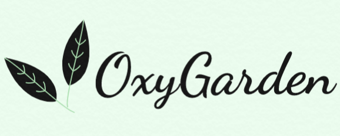

Ruchita Chaudhari, Artificial Intelligence and Data Science student, Vishwakarma Institute of Technology, Pune.
The tough times of Covid-19 have shown us the importance of fresh oxygen. Planting indoor plants inside our home will help us purify the indoor air. The oxygen giving indoor plants can convert carbon dioxide into oxygen at night and remove toxic air pollutants. But, many people don't really know the importance of planting oxygen rich indoor plants inside their home or bedroom. So I decided to make a website through which they will come to know about the various indoor plants, their importance, how they actually look and links to buy them.